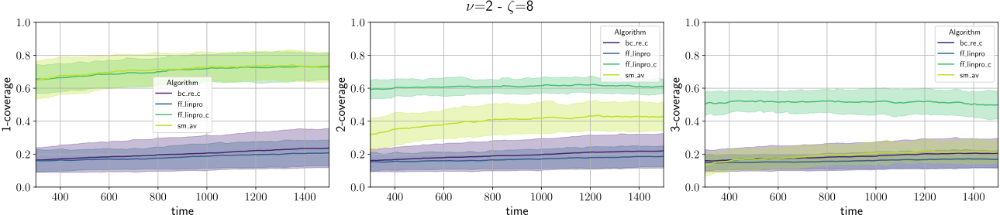

Decentralized Multi-Drone Coordination for Wildlife Video Acquisition
Denys Grushchak ,
Jenna Kline ,
Danilo Pianini ,
Nicolas Farabegoli ,
Gianluca Aguzzi ,
Martina Baiardi ,
and
Christopher Stewart

Department of Computer Science and Engineering, University of Bologna, Cesena (FC), Italy

Computer Science and Engineering Department, The Ohio State University, Columbus (OH), USA
Wildlife behavior acquisition
A paramount tool for ethologists and biologists to gather insights into the nature and inform conservation efforts for endangered species.
- Animal health monitoring
- Behavioral changes induced by climate change or human activity
- Current population level
- Insights into future population levels
GPS collars
- Great position tracking
- Possibly equipped with further sensors (temperature, accelerometer…)
- Long battery life
- No video
- Invasive (requires capture and release) $\Rightarrow$ Limited sample size
Camera traps
- Photos and potentially videos
- Non-invasive
- Multiple species
- Static and with limited range
- False triggers
- Subject to vandalism and theft
- Generally fragile (the tiger in the first picture destroyed the camera)
Fixed-wing drone aerial views
- Very large area coverage
- Long flights
- Nadir imagery: good for mapping, bad for individual behavior
- Requires specialized training
- Predefined flight paths
Non-nadir perspective
Quadcopters and similar drones
-
Large area coverage
- Although much smaller than fixed-wing drones
- Non-Nadir view is great for individual behavior
- Multiple drones can get different perspectives
- Dynamic trajectories
- Noise may disturb wildlife
- Relatively short battery life
-
Skilled pilots required
- Practically impossible to coordinate multiple drones effectively by hand
$\Rightarrow$ Multi-Drone Coordination
- No need for human pilots
- Similar to well-known problems in the literature!
A special OMOkC
In the Online Multi-Object k-Coverage (OMOkC) problem, dones coordinate to cover each interesting target with at least $k$ points of view.
Our problem is a variant of OMOkC, in which:
- The focus is on animal groups rather than single animals $\Rightarrow$ Herd tracking
- Drones have a blind zone due to their non-nadir point of view $\Rightarrow$ Blind zone
- The position of animals within the Field-of-View dramatically changes the quality of the result $\Rightarrow$ FoV centrality
- The angle at which a subject is being observed matters, lateral views are more informative than frontal ones $\Rightarrow$ Observation angle
- Observers emit noise that may alter the behavior of the observed animals $\Rightarrow$ Noise pollution
- Observation is performed in contexts with limited infrastructure $\Rightarrow$ Decentralized coordination
Contribution
A methodology to evaluate the performance in wildlife video acquisition
We define metrics for:
- The centrality in the Field-of-View of each camera
- The overall angles of observation of each animal
- The noise pollution generated by the drones
We build simulations based on a novel herd simulation algorithm based on the KABR dataset
(Jenna presented the algorithm at SISSY on Monday)
$\Rightarrow$ We observe that pre-existing OMOkC algorithms do not perform as well as expected in our context, and thus we propose to extend the current SOTA with:
An herd-aware decentralized multi-drone coordination algorithm
FoV Centrality
- Let $P_c$ be the center of the FoV $\mathcal{V}$ of camera $c$.
- Let $F(c)$ be the maximum distance from the center of the FoV
then
$F(c) = \max \left| P - P_c \right| ~ \forall P \in \mathcal{V}$.
- For any camera $c$, $F(c)$ represents the worst possible position in its FoV.
- For an animal $z$ located in $P_z$, a normalized estimate of how poorly it is positioned in the FoV of $c$ is: the ratio between its distance to the center and $F(c)$: $\frac{\left| P_z - P_c \right|}{F(c)}$
- The normalized FoV centrality for a target animal $z$ and a drone $c$ is then: $Q(z, c) = 1 - \frac{\left| P_z - P_c \right|}{F(c)}$
- Generalized for a set of cameras $C$ observing a target $z$: $\Gamma(z) = \max_{c \in C} Q(z, c)$
TL;DR: the closer to the center, the better
- find the worst possible position to be used as bound
- use that to estimante how good is the animal position for each camera
- for each animal, consider only the best camera
Observation angle: body coverage
Ideas
- the best observation comes from a perfectly perpendicular angle
- the “longer” the side of the animal that is being observed, the better the observation
- that’s why observations from the side are more valuable than frontal or back ones
- small deviations from perpendicularity are not that bad
- approximate the animal’s body with a polygon
- for each segment $s$ find the camera $c$ observing the segment midpoint from the smallest angle $\alpha_s$: $c$ has the best available view for $s$
- normalize $\alpha_s$ in $[0, 1]$ with $\Phi: [-\frac{\pi}{2}, \frac{\pi}{2}]\rightarrow{}[0, 1]$.
- use a logistic function to penalize more the extreme angles: $\Phi(x;\mu,\nu)=\left[1+\left(\frac{x(1-\mu)}{\mu(1-x)}\right)^{-\nu}\right]^{-1}, \mu=\frac{1}{2}, \nu=5$
- get the observation quality for $s$: $\xi(s) = \Phi\left(\frac{|\alpha_s|}{\frac{\pi}{2}}; \frac{1}{2}, 5\right)$.
- repeat for every “side” of the animal in $S_z$ to get the body coverage $\Diamond(z) = \frac{\sum_{s \in{} S_z} |s| \cdot \xi(s)}{|S_z|}$
Noise pollution
We need the Sound Pressure Level $L_P$ at the position of the animal.
Of course, manufacturers only provide the Sound Power Level $L_W$, a measure of the sound energy emitted by the drone.
To convert into the SPL at distance $r$ from the drone, we need a directivity factor $Q$: $L_P = L_W - \left| 10 \log_{10} \left(\frac{Q}{4 \pi r^{2}}\right) \right| $
We assume $Q=1$ (spherical propagation), and $r=1m$ (a typical distance at which manifacturer measure the Sound Power Level).
The $L_P$ perceived by an animal $z$ at distance $d$ from the drone with air attenuation is: $ L_{P_d}(z) = L_{P}(z) + 20 \log_{10} \left(\frac{r}{d}\right)$
For multiple drones $C$, their contributions sum: $L_{P_T}(z) = 10 \log_{10} \left(\sum_{c \in{C}} 10^{\frac{L_{P_c}(z)}{10}} \right)$
To normalize in $[0, 1]$, we assume that a noise below $20dB$ (~ a ticking watch) can’t be distinguished from the background, and a noise above $80dB$ (~ police car siren) will always disturb the animal.
Since noise is perceived non-linearly, we use a sigmoid with $\mu=40dB$ (~ refrigerator hum, our proxy for the background noise).
The final normalized noise metric is thus $\rho(z) = \Phi\left(h(L_{P_T}(z)); h(\mu), 4\right)$
TL;DR
- we assume noise propagates in air without major obstacles or reflections
- we set silence at the sound of a ticking watch, and maximum noise at the level of a police siren
- we sum the contribution of every drone and consider non-linear perception
plain LinPro
Herd-sensitive tracking
Running state-of-the-art OMOkC algorithms¹ on our setup highlighted some issues:
- OMOkC algorithms are designed to cover individual targets, not groups
- Current SOTA algorithms are meant to quickly react to changes in interestingness, but all animals are equally interesting
- Usual setups have enough drones to provide $k$ views for each target, but with herds targets largely outnumber drones
$\Rightarrow$ We alter the general structure of OMOkC algorithms to track herd centroids instead of individual targets.
- Identification and localization: each drone identifies and localizes the animals in its FoV as best as it can
- we accept localization and identification errors
- Information exchange and consensus: local information is exchanged among drones to reach consensus on the herd composition,
then each drone, locally, performs a recursive hierarchical agglomerative clustering² to find the herd centroid
- we accept limited communication ranges and network segmentation
- we accept that different drones may have different information and compute different centroids
- Prioritization: we feed the locally-computed herd centroids to the original OMOkC algorithms
- D. Pianini, F. Pettinari, R. Casadei, and L. Esterle, “A collective adaptive approach to decentralised k-coverage in multi-robot systems,” ACM Trans. Auton. Adapt. Syst., vol 17, pp. 4:1–4:39, 2022.
- A. Lukasová, “Hierarchical agglomerative clustering procedure,” Pattern Recognit. 11(5-6): 365-381, 1979
LinPro + clustering
Evaluation
- Simulation of a 2x2km arena realized in Alchemist¹, algorithms written in Protelis²
- aggregate computing³ worked quite well for the decentralized coordination
- video capture session of 30 minutes (to avoid concerns related to battery life)
- 140 grazing zebras, moving at a maximum speed of $2\frac{m}{s}$ split in 2, 4, or 8 separate herds
- drone-to-herd ratio of 1:1, 2:1, and 3:1.
- drones can move at $10\frac{m}{s}$ and have a line-of-sight communication range of $1km$.
- Experiments available and reproducible: https://github.com/nicolasfara/experiments-2024-ACSOS-imageonomics-drones

Overall results
global metric, $\nu~\Rightarrow~$ drones per every herd, $\zeta~\Rightarrow~$ herd count

- Force-Field LinPro+Clustering (
ff_linpro_c) is the best across the board - Plain Force-Field LinPro, that outperforms all other algorithms in “classic” OMOkC scenarios, is the worst in our context
- The higher the drone:herd ratio, and the more herds, the larger is the gap between
ff_linpro_cand the remainder of the algorithms, showing better adaptation
Coverage results
1-, 2-, and 3-coverage, all algorithms configured to achieve 3-coverage ($k=3$)


- Force-Field LinPro+Clustering (
ff_linpro_c) is the best but for 1-coverage and too few drones - Smooth-Available (
sm_av) achieves good 1-coverage, but performance degrades with higher coverages- It is likely that
ff_linpro_cconfigured with $k=1$ would perform better
- It is likely that
- Plain LinPro (
ff_linpro) and Neighbor-Broadcast-Received-Calls (bc_re), our baselines, perform consistently poorly
Quality and noise results
Geometric mean across all experiments, broken down for each metric
| $\Diamond~\Rightarrow$ body coverage | $\Gamma~\Rightarrow$ FoV centrality | $\rho~\Rightarrow$ noise pollution |
|---|---|---|
 |
 |
- LinPro+Clustering (
ff_linpro_c) and Smooth-Available (sm_av) are the noisiest because they achieve better coverage - Neighbor-Broadcast-Received-Calls (
bc_re) tends to over-cover few animals, leading poor centrality and loud noise
Future work
| Algorithmic improvements | Model improvements | Evaluation improvements |
|---|---|---|
| Adaptive clustering threshold | Noise-sensitive herds | Robustness analysis |
| Learning-based approaches | Energy model | Network requirement analysis |
| Battery management | Multiple species | Computational weight analysis |
| Noise-aware optimization | ||
| Mission-level control |